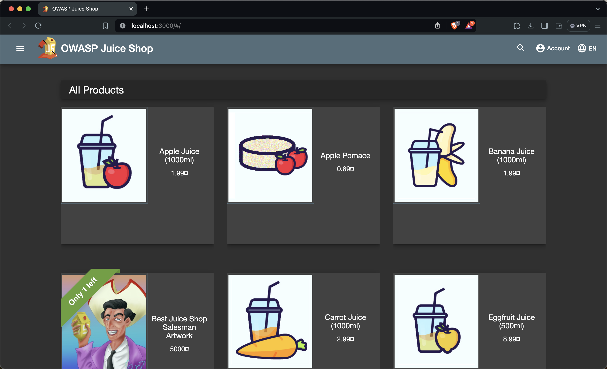

Juice Shop
C’est quoi Juice Shop ?
Juice Shop est une application web vulnérable pour l’entraînement des testeurs de sécurité. Il est inspiré par les applications modernes qui utilisent des technologies JavaScript lourdes, telles que Angular et Node.js. Juice Shop est conçu pour être utilisé dans des ateliers de formation, des cours de sécurité informatique, des tests de pénétration ou des compétitions de capture du drapeau (CTF).
Prérequis
Spécifications minimales du système
- RAM: 256 MO
- CPU: 200 millicpu
- Espace disque libre: 300 Mo
Spécifications système recommandées
- RAM: 384 MO
- CPU: 400 millicpu
- Espace disque disponible: 800 Mo
Logiciels requis
- Docker
Installation
Pour l’instalation de Juice Shop on va utiliser Docker.
Avant tout nous devons installer Docker sur notre machine. Pour cela, on peut suivre les instructions sur le site officiel de Docker : Docker
Dans un premier temps, on va créer un fichier de configuration myConfig.yml pour Juice Shop.
application:
logo: JuiceShopCTF_Logo.png
favicon: favicon_ctf.ico
showVersionNumber: false
showGitHubLinks: false
welcomeBanner:
showOnFirstStart: false
challenges:
showHints: false
safetyOverride: true
hackingInstructor:
isEnabled: false
ctf:
showFlagsInNotifications: true
Une fois le fichier de configuration créé, on peut lancer Juice Shop avec la commande suivante :
docker run -d -e "NODE_ENV=myConfig" -v /tmp/myConfig.yml:/juice-shop/config/myConfig.yml -p 3000:3000 --name juice-shop bkimminich/juice-shop

Nous pouvons maintenant accéder à Juice Shop via l’adresse http://localhost:3000/ dans notre navigateur.

On peut y voir un drapeau rouge sur le logo de Juice Shop. Donc c’est parti pour la chasse aux drapeaux !
Conclusion
Voila ! Nous avons installé Juice Shop sur notre machine. On peut maintenant s’amuser à tester les différentes vulnérabilités de l’application. Tout ça en Local, bien sûr !